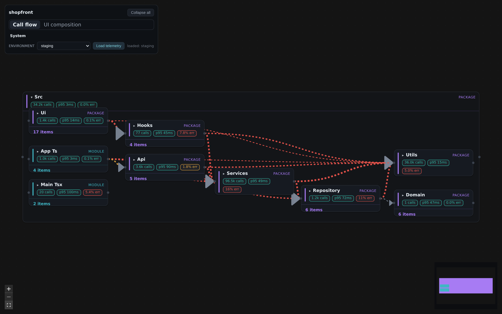
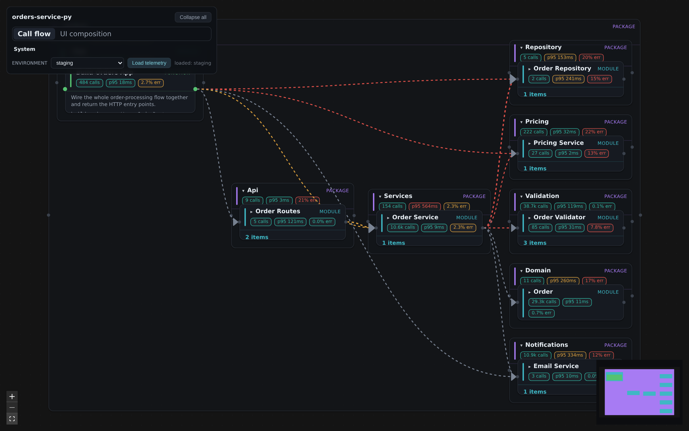
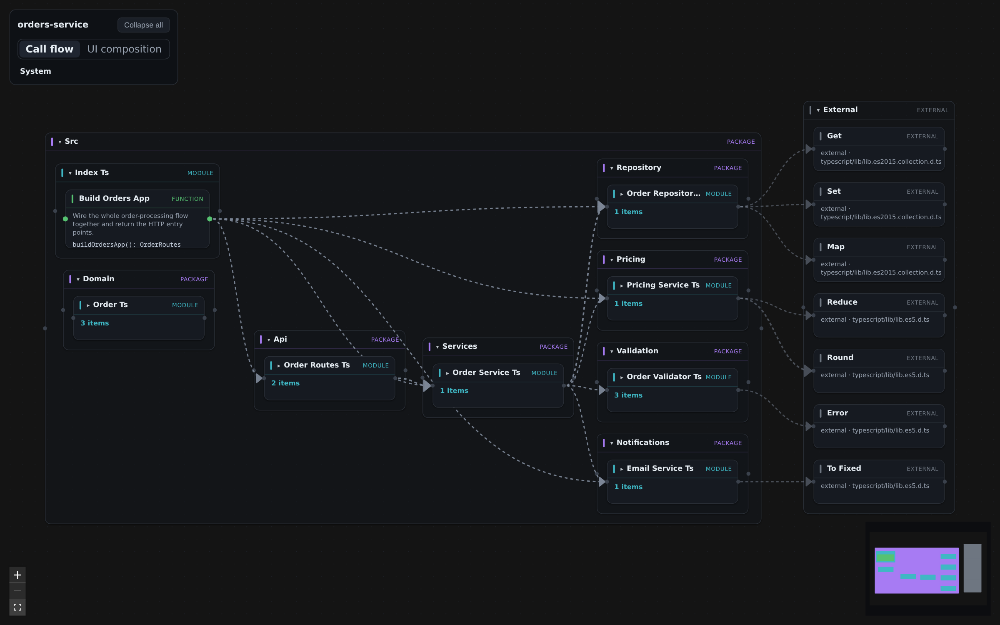
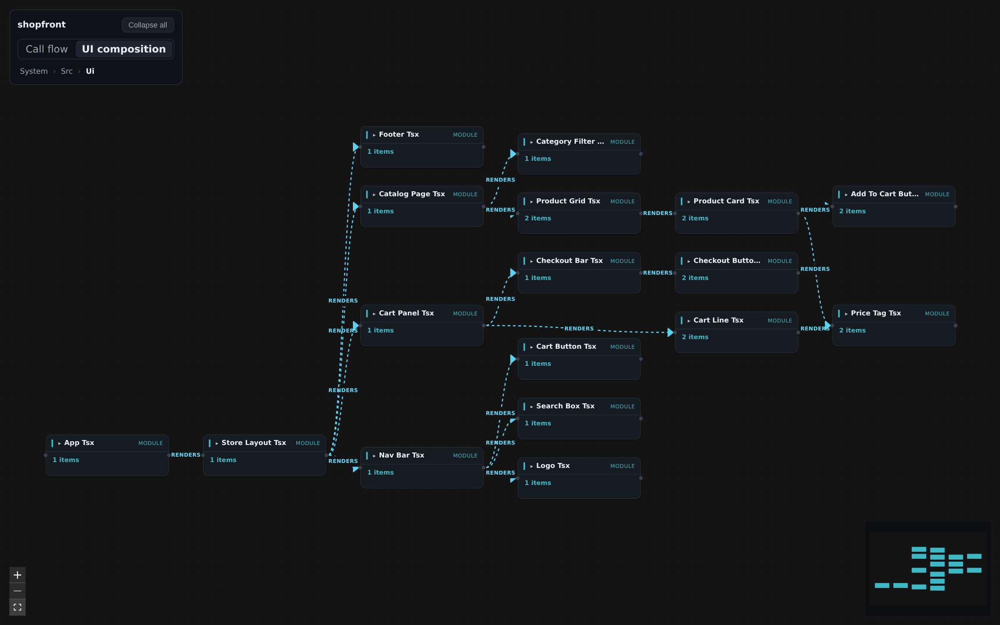
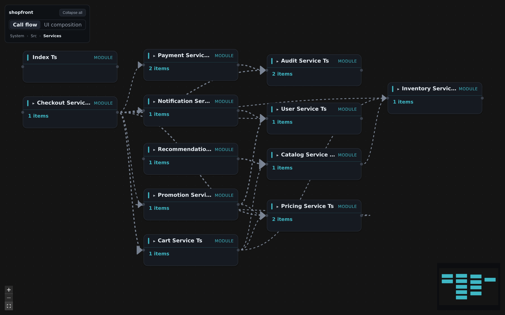
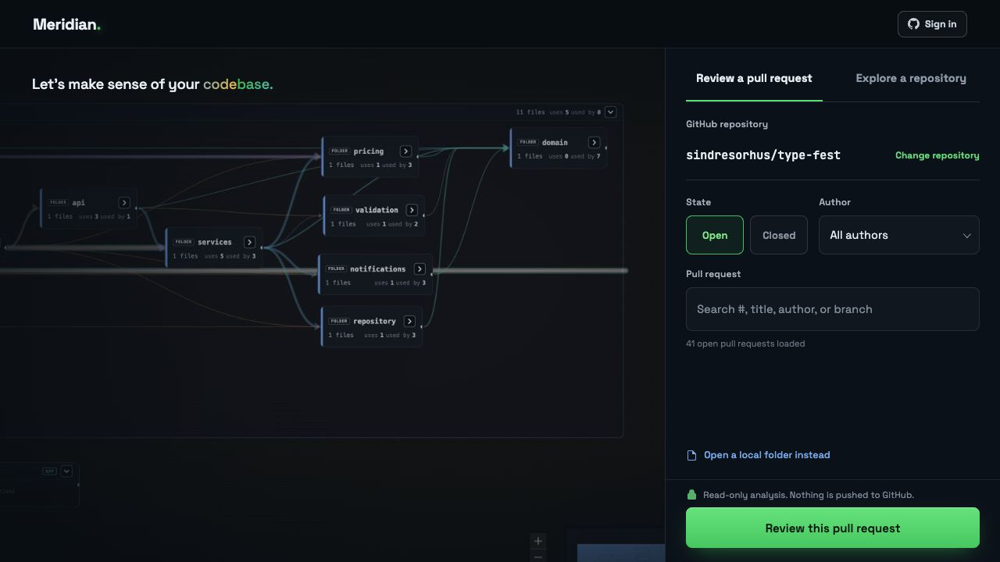

Meridian.
Any codebase → a live map of how it flows.
Static source in, an interactive blueprint out — red high-error wires converge on the Utils god-module.
Node kinds
package
module
class
interface
function / method
external
Edges
calls · resolved
external / unresolved
renders (UI)
hot / high-error
01
The pipeline
source → detect all → extract + merge → artifact → renderer
the artifact is the code — regenerate anytime, it never drifts.

Call flow + live telemetry overlay

Same renderer, a Python service — py: ids
02
One id, three jobs
the node id = generalized __qualname__
structure & runtime never desync — the same string is the graph key, the canvas id, and the trace join.
03
What it extracts
package → module → class → method, plus honest edges
honest by design: library & unresolved calls are surfaced as dashed boundary edges — shown, never hidden.

Canonical analysis surfaces the boundary into an External group
04
Two lenses, and dive-in
same nodes, different edges — then descend one box at a time
Call flowUI composition
dive into a box to keep a huge graph readable — a breadcrumb climbs back out.

UI-composition lens — the render tree

Dive-in — re-rooted into Services
05
Architecture
one frozen contract, everything points at it
06
meridian web
paste a repo, get a blueprint — locally
self-hosted · code never leaves your machine · private repos via a local-only token.

The meridian web front door